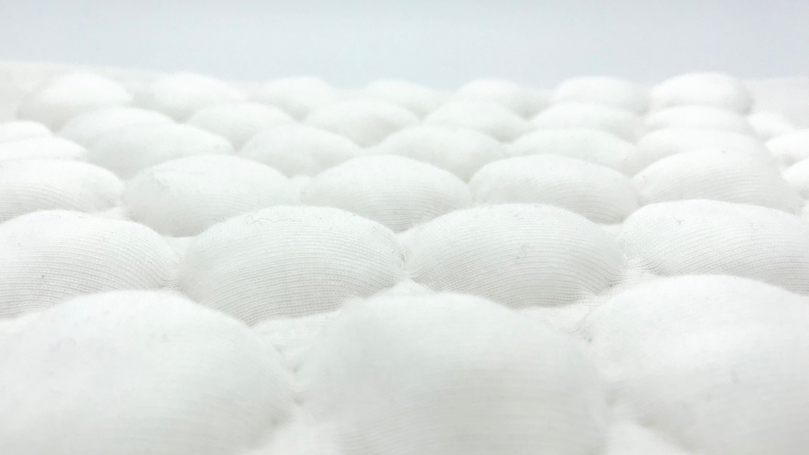
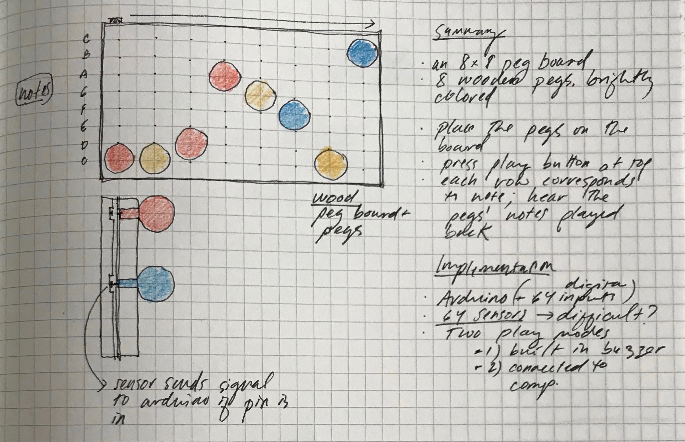

Flocked Bubbles
Can I create a tactile and audio interaction that is simply satisfying, in the spirit of bubble wrap?
41 hand-cut foam buttons control three woven pressure sensors using conducive tape and velostat. All buttons are covered in flocked fabric, and sit on top of a wood frame which holds a removable arduino and board. The pressure sensors are read into Processing code to produce a "pop" sound when one or more of the buttons is pressed.
Swatch prototype
Swatch prototype
Breadboard and paper prototype
Swatch and breadboard prototype

Implementation prototype complete: reading signals from swatch into Processing code.
A future version, based on critique feedback, is already underway. The new version has more and better defined buttons (for more obvious affordance), and an entirely flexible feel (ie. no wooden base). The code underneath is the same.
Concept development and alternative concepts
Idea 1: transparent blocks with a section of circuit inside. Connect the blocks in any number of ways to build a circuit.

Look and feel prototype. How big should the blocks be? Is transparency necessary? How many blocks make it interesting?
Idea 2: insert pegs into a wooden pegboard and hear corresponding musical notes played back.
(Similar to Chrome Music Lab's Melody Maker, but tactile.)
Do I need a pause/play button? Should it play on repeat or once through? How many pegs are ideal? How big should it be?
Do I need a pause/play button? Should it play on repeat or once through? How many pegs are ideal? How big should it be? What is the tactile sensation I'd like?
Idea 3: remove all of the practical use and limitations of bubble wrap, and re-imagine it as if it were made specifically for tactile and audio pleasure.
How big can the bubbles be? What materials should I use? Is foam too firm? What sound should trigger?